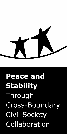

ПРОЕКТ
"Общественный эколого-исторический музей"
"Общественный эколого-исторический музей"
В ноябре 2003 года проект «Общественный эколого-исторический музей», представленный Калининградским региональным общественным учреждением «Виштынецкий эколого-исторический музей» был поддержан на конкурсе проектов, организованном Датско-российским Фондом местного развития Нестеровского района и получил финансовую поддержку. Фонд функционирует при Общественном Форуме в рамках Датско-российского проекта по приграничному сотрудничеству и развитию местного сообщества. Датско-российский проект осуществляется Датским отделением Всемирного Фонда Дикой Природы (WWF-Danmark), Обществом охраны природы Дании (DN) и Фондом добрососедских отношений Министерства иностранных дел Дании.
Нашими партнёрами по проекту являются:
Калининградский областной историко-художественный музей, отдел "Мемориальный музей Кристионаса Донелайтиса"
КРОО "Экологический центр "РОМИНТА"
КРМОО "Экологическая группа "ГИД"
Природный парк "Роминская Пуща" (Польша)
Калининградский областной историко-художественный музей, отдел "Мемориальный музей Кристионаса Донелайтиса"
КРОО "Экологический центр "РОМИНТА"
КРМОО "Экологическая группа "ГИД"
Природный парк "Роминская Пуща" (Польша)
Цели проекта:
Долгосрочной целью проекта является повышение уровня общественной активности и пропаганда бережного отношения к природному и культурному наследию виштынецкой возвышенности
открытие общественного эколого-исторического музея.
Ближайшая цель проекта - открытие общественного эколого-исторического музея.
Долгосрочной целью проекта является повышение уровня общественной активности и пропаганда бережного отношения к природному и культурному наследию виштынецкой возвышенности
открытие общественного эколого-исторического музея.
Ближайшая цель проекта - открытие общественного эколого-исторического музея.
По проекту запланирован ряд мероприятий:
1. Встреча со старожилами пос. Чистые Пруды (первыми переселенцами, ветеранами войны и труда) - февраль 2004 г.
2.1. Поездка в Польшу сотрудников общественного музея с целью расширения рабочих контактов и сбора дополнительного исторического материала, в том числе работа в архивах - март 2004 г.
2.2. Подготовка новой экспозиции о природе и истории Виштынецкой возвышенности в помещении музея К. Донелайтиса - январь-май 2004 г.
1. Встреча со старожилами пос. Чистые Пруды (первыми переселенцами, ветеранами войны и труда) - февраль 2004 г.
2.1. Поездка в Польшу сотрудников общественного музея с целью расширения рабочих контактов и сбора дополнительного исторического материала, в том числе работа в архивах - март 2004 г.
2.2. Подготовка новой экспозиции о природе и истории Виштынецкой возвышенности в помещении музея К. Донелайтиса - январь-май 2004 г.
3.1. Открытие общественного эколого-исторического музея. Праздничное мероприятие с участием местных жителей и приглашенных гостей - май 2004 г.
3.2. Постоянная работа экспозиции общественного музея - с мая 2004 г. по июнь (и далее после завершения проекта)
4.1. Издание информационного буклета и рекламных карманных календарей об общественном музее - апрель 2004 г.
4.2. Подготовка пресс-релизов о деятельности общественного музея, встречи с представителями СМИ, подготовка статей для газеты «Сельская Новь» и выступлений на местном радио - в течение всего проекта.
4.3. Организация и проведение экскурсий для школ Нестеровского района (не менее 5 школ) май-июнь 2004 г.
3.2. Постоянная работа экспозиции общественного музея - с мая 2004 г. по июнь (и далее после завершения проекта)
4.1. Издание информационного буклета и рекламных карманных календарей об общественном музее - апрель 2004 г.
4.2. Подготовка пресс-релизов о деятельности общественного музея, встречи с представителями СМИ, подготовка статей для газеты «Сельская Новь» и выступлений на местном радио - в течение всего проекта.
4.3. Организация и проведение экскурсий для школ Нестеровского района (не менее 5 школ) май-июнь 2004 г.